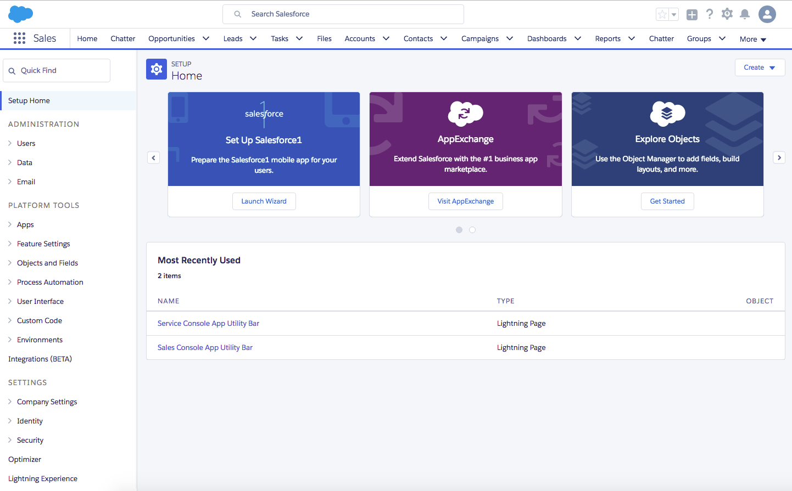
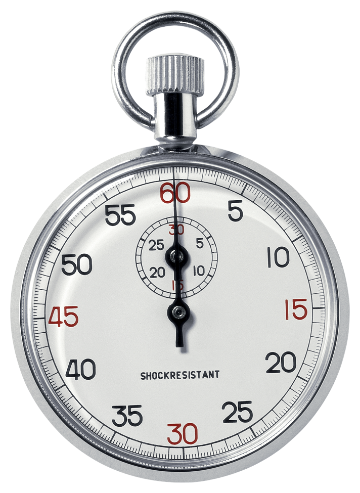
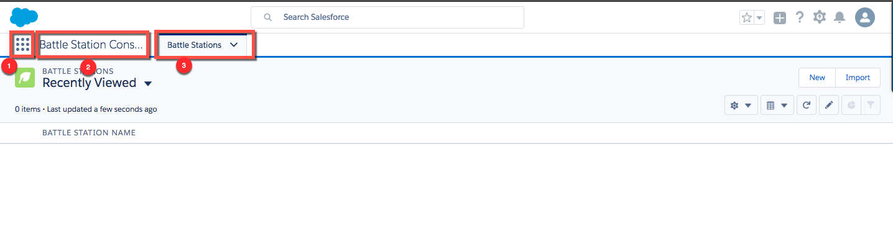
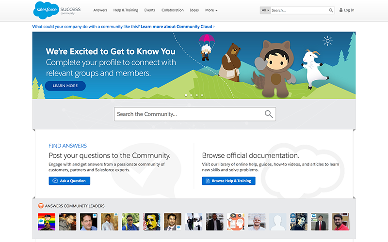

Intro to App Building with Salesforce
[instructor notes: GDI leader usually kicks off the class; fill in your info & the TA info (slides 6 & 8)]
Welcome!
Girl Develop It is here to provide affordable and accessible programs to learn software through mentorship and hands-on instruction.
Some "rules"
We are here for you!
Every question is important
Help each other
Have fun
Welcome! Here are rules we live by. [GDI leader usually does this part]
Agenda
Start Time
End Time
Topic
10:00
10:30
Intros
10:30
11:00
Salesforce Overview
11:00
12:45
Hands On – App Framework & Data Modeling
12:45
1:30
LUNCH
1:30
3:10
Hands On – User Interface & Business Rules
3:10
3:25
BREAK
3:25
4:35
Hands On – Analytics & Mobile
4:35
5:00
Wrap Up
This is the plan for the day. The bulk of the time is you building a sample app. For this hands on project, you will be signing up for a Trailhead account and getting your very own, free, Developer Edition login for Salesforce. We’ll walk through that when we get to the first step of the project.
Welcome!
[instructor intro: give a quick background & why you are teaching the class]
Welcome!
Now we want to know a little about you.
We have wondering volunteers from the local Salesforce Women in Technology user group. Salesforce has many user groups, some are focused on developers, some on end users and admins, and the WIT groups are focused on women supporting each other’s success. We have WIT groups in 30 cities around the world. I’d like to give the volunteers a minute to introduce themselves and give a little background as to how they got into Salesforce and what their current role is. And I highly encourage everyone to ask tons of questions and get to know them during the day. One of the biggest strengths of the Salesforce platform is the strength of the community.
Salesforce Overview
Before we start building, I’ll give a quick overview of Salesforce.
Salesforce is...
Trailblazers
Platform
Apps
.com
Salesforce is
End User View
That’s all good, but what do these business apps look like?
Setup Home

Here’s what developers and admins see. This is the front door to the back end of your Salesforce database. This is where you will add fields and so much more to customize and create business applications. You’ll be spending a lot of time here today.
What Will We Build?
Business Requirements
Your battle station was destroyed. You need to build another.
As the construction project manager, your primary goals are to:
manage the construction of the Battle Station
live longer than your predecessor
You decide to manage your project with Salesforce. This way everyone on your team can collaborate, be successful, and stay alive.
We’re going to use the Salesforce platform to build a simple, employee-facing project management app.
Why No Code?
Metadata!
Today you will build a complete, working enterprise application accessible through a browser or mobile device. Yup, you will! This class will walk you through how to build each part of this application: first the data model, which will generate a default user interface, then configuring the user interface, then adding business logic and analytics. And finally, viewing your app on a mobile device.
Demo: Battle Station Construction App
Project Management app to track Battle Stations we’re building, Supplies we need to build them, and Resources (aka People Working on the Project)
Let’s take a look at what you’ll have at the end of class…
Demo: Setup
We will create all of this metadata in Setup. We do not need to download any software to develop this app – all the tools we need are in the cloud.
Let's Get Started!
We’re using Salesforce’s free learning platform, Trailhead , for all our hands-on exercises
We’re using Salesforce’s free offering, Trailhead Playground , as our database
Trailhead is the fun free way for Admins, Developers & Anyone to learn Salesforce.
Sign Up for Trailhead (Part 1)
Open your web browser and go to trailhead.salesforce.com . Chrome or Firefox is best.
Click Sign Up
Choose a social media account (Facebook, Google, or LinkedIn). Log in.
talk through the flow on this slide and the next slide. Encourage using a social account. if they don’t have a social account, they can go the Create a Salesforce Account path, but it is longer so they should have a TA standing next to them
Sign Up for Trailhead (Part 2)
Click Allow
Complete the “Just a few more questions” form (choose any role) and click Continue
IMPORTANT: Enter ILOVEGDI as your Company Name!
Now you are logged into Trailhead! Also, in the background, Salesforce is spinning up a Trailhead Playground database for you. We’ll see that in a minute, but first, let’s take a look around in Trailhead...
Demo: Trailhead
[Once everyone is in, DEMO Trailhead. Talk about the difference between Trails, Module, Projects, and Superbadges
Step 1: App Building
OK, is everyone ready? Before we start I want to recognize that everyone works at a different pace. We’ll be doing a lot of hands-on work today. If you finish early, you can take a break OR if you want to keep learning, click on the Resources links at the end of each Step and challenge yourself to learn more and even to earn more points and badges!
Open your Trailhead Playground
trailhead.salesforce.com Build a Battle Station App project
Step 1: Create the Battle Station App
Scroll down and click Launch your hands-on org
You are in Trailhead and behind the scenes, Salesforce has spun up a Trailhead Playground database for you. [under the covers this is a Developer Edition org]
#ProTip 1: Trailhead & Setup Side-by-Side
In previous classes, students have had as easier time reading the trailhead instructions, and copying from them, and working in Setup when they open them in two separate windows and arrange them side by side.
#ProTip 2: Open Trailhead and your Salesforce Org in Separate Browser Windows
(in Chrome: use Command + ~ to swap windows)
Sometimes it’s tough to see the Salesforce side of things side-by-side, so another trick is, if you have Chrome, use Command + ~ to switch between two browser windows, one with Trailhead and one with your Salesforce screen.
Let's Develop It!
Build a Battle Station App project
Step 1: Create the Battle Station App
 20 Minutes
Now it’s time to get hands on. Start at the top of the project, read the introduction and follow the hands on instructions to start building your project management app. Stop at the end of Step 1.
Let's Verify It!
+ 50 Points
[after the 15 min timer is up] Let’s make sure you get credit for your work. Did everyone click Verify Step?
You Made (the bones of) an App!

App Launcher — Displays available apps.
Salesforce Terminology
App : collection of tabsTab : how users navigates to data (aka records)Records : anything you can make a list of (e.g., battle stations)Object : a place to store records + metadata
Here are some terms you will hear a lot when building with Salesforce. In this first Step, you created the scaffolding for a new app by just providing a few details, then the platform will generate the metadata you need to get started, including an app, a tab, and an object that will store your records.
The Battle Station Construction App
We need to define more metadata for our app.
Metadata is data that describes other data.
Step 2: Data Model
In this next step, you’ll create the data storage for the app.
A Database is Like a Spreadsheet
Who is familiar with Excel? When you create an excel spreadsheet to track information, you are doing a form of data modeling – you decide what each column is named, based on the pieces of data you need to track, like the Date of an Event or a person’s Name. Each row of data is about a specific event or person or whatever you are tracking. You may also create multiple “sheets” to logically separate the things you are tracking.
Relational Databases have Relationships
Images based on Twitter data model from
Who is familiar with relational databases? Each relational database table comprises a number of columns of a particular data type, such as text, number, or date. Information is stored in rows of the table. Again, it’s helpful to visualize these tables as spreadsheets.
Data Modeling Terminology
Standard Objects : objects included with Salesforce to store data (records) about things like Accounts, Contacts, OpportunitiesCustom Objects : new objects you create to store data (records) – custom objects are unique to your companyFields : place to store an individual piece of data for a record – similar to a column in Excel or in a relational databaseRelationships : special type of field that connects objects
Salesforce provides a powerful database, with many features that make it faster and easier to create applications.
Data Model for Managing your Battle Station Construction Projects
Here is a sneak peek at the data model for the Battle Station Construction app. You will build three custom objects and define two relationships.
Data Model for Managing your Battle Station Construction Projects
Custom Field Wizard
From Setup, enter Object Manager in the Quick Find and select Object Manager.
Select Battle Station .
Scroll down to Fields & Relationships, and click New .
This next Step has you adding a bunch of fields. You do that with what we call the Custom Field Wizard. Wizards are a common way to guide someone through multiple steps to create new metadata in Salesforce, or any platform. The Custom Field Wizard steps you through defining all of the details you need to specify for your field, including the field type, name, length, security, and whether or not to add the field to the user interface.
Let's Develop It!
Build a Battle Station App project
Step 2: Build the Object Model
40 Minutes
Let’s Develop It! In this next step you’ll define the metadata for your data model so that you can store information about your battle station projects. Reminder: If you finish early, you can take a break OR if you want to keep learning, click on the Resources links at the end of the Step to learn more about Objects and Formulas.
You Made a Place to Store Data in the Database, AND a way to enter that data in the User Interface
YOU CONTROL THE INTERNET!
LUNCH BREAK
Take a walk around
Think about what you've all learned
Get to know a fellow classmate
Lunch break! [Encourage folks to get to know each other - community is what it’s all about!]
Join the Salesforce Community!
success.salesforce.com

[Ease back into the content by introducing students to the Success Community.]
The Success Community is the place to go to find answers and to connect with other Salesforce professionals. In the Collaboration area you’ll find a ton of interest groups. In [cityname] we have a Salesforce Women in Tech User Group and ____________. Take a minute to update your Profile and join a group.
Step 3: User Interface
You can’t have a database without a objects and fields, but no one will put data in your database if the user interface is hard to use.
Let's Keep Developing!
Metadata! In this step, you’ll modify the user interface for the app to make it more intuitive.
UI & UX
A user interface (UI) is how people interact with the apps you create.
User Experience (UX) is how a person feels about your product
The more intuitive you make your user interface, the more your users will enjoy and use your app.
Page Layout Editor
Page layouts allow you to customize the design and organization of detail and edit pages in Salesforce.
Page Layout Editor
Rollup Summary Fields (RSFs) allow you to aggregate data from multiple child records and store it on the parent record.
Only available in Master-Detail relationships
SUM, MAX, MIN, COUNT
Improves the Usability and User Experience by having the system do the work for your users, making their life easier!
In Step 2 you created multiple fields of different types. You use the Custom Field Wizard to create Rollup Summary Fields, too. [don’t need to demo this]
Let's Develop It!
Build a Battle Station App project
Step 3: Modify the User Experience
20 Minutes
Let’s Develop It! In this next step you’ll use the Page Layout Editor and Rollup Summary Fields to improve the user interface and experience.
Step 4: Business Logic
Now you can get data in and out of your database, but let’s make our app do more.
The Battle Station App
In this step you’ll implement business logic by creating metadata to enforce the rules for your company.
What is Business Logic?
All organizations have processes. Some are well documented. Others, not. Business logic in your app is a way to enforce and automate those processes.
Validation Rules : Enforcing business processes improves data quality. If it’s not valid to have an invoice without a dollar amount, then don’t let people save one.Process Builder : Automating business processes increases productivity in your organization. If the next step is always to send the customer an email, then let the system do that.
We’re going to add business logic to our app with two different tools: Validation Rules and Process Builder.
What is Business Logic?
Enforce data quality
Are associated with an object
Are run when a record for that object is created or updated
Use formulas to express when data is invalid
Validation rules verify that data entered by users in records meet the standards you specify before they can save it.
Formulas
A formula is an algorithm, similar to a macro in a typical spreadsheet program, that derives a value from other fields, expressions, or values.
You can use formulas in many contexts in Salesforce, including Validation Rules and Process Builder processes .
You created a formula field in step 2
Demo: Validation Rules
This is how the system sees the flow of a validation rule. Note that we are going to define a statement which if TRUE means the data Is bad.
Process Builder
Process Builder allows you to automate business processes using a graphical representation of your process. Processes are associated with an object . Processes are run when a record is created or updated for that object.
Processes consist of criteria that determine whether or not to execute actions .
The other tool we’ll use is Process Builder. Process Builder is a workflow tool that helps you easily automate your business processes by providing a powerful and user-friendly graphical representation of your process as you build it. You simply point-and-click to build your processes which run "behind the scenes" in response to actions.
Demo: Process Builder
Demo process builder and testing a process
Let's Develop It!
Build a Battle Station App project
Step 4: Add Business Logic
40 Minutes
Let’s Develop It! In this next step you’ll use Validation Rules and Process Builder to enforce business rules and automate business processes.
Now you’re making the app do the work, not the project manager!
[Check in that everyone gets how this step works. Did they test their validation rule? Run their processes?]
Step 5: Analytics
This app is looking pretty good – We have a place to store data, a way to get that data into the system, and a way to ensure the quality of that data. We’re on the home stretch now!
Let's Keep Developing!
Now we want to create metadata to analyze the data so we can see how our project is going and can make business decisions. We’ll do that with Reports and Dashboards.
Why Reports & Dashboards?
“If you can’t report on it, the app doesn’t matter.”
– Mike Gerholdt, Salesforce Admins Podcast co-host
Getting quality data into the database is important, but getting it out is even more important.
Reports and dashboards come as part of the platform and are available for all standard and custom apps. Reports & Dashboards are how you see the health of your business. And, according to Mike Gerholdt, founder of the ButtonClick Admin blog and podcast (which is now the Salesforce Admins podcast) who was a Salesforce Admin for 7 years before joining Salesforce as an Admin Evangelist, If you can’t report on it, the app doesn’t matter.”
Reports
A report is a list of records that meet the criteria you define. It’s displayed in Salesforce in rows and columns, and can be filtered, grouped, and can include a graphical chart.
[Demo the end user view FIRST. Use the Sales by Account report that comes with the DE org. Reports tab | Sales Reports folder | Sales by Account report. Change the Time Frame range to Custom and set From date to 2000. This is a tabular report, looks like what you’d see in an Excel spreadsheet – a list of the report. You can sort the list and the sales are summed at the bottom.]
Report Builder
The drag-and-drop report builder allows you to create reports by dragging and dropping fields from the fields pane [1] onto the preview pane [3]. The filters pane [2] is where you can enter additional criteria to limit your results. In the example above, we’re filtering by a specific Account Owner, Type, and Billing State/Province.
Dashboards
A Dashboard is a visual display of key metrics and trends for your business.
The data for each Dashboard Component comes from a Report.
The drag-and-drop report builder allows you to create reports by dragging and dropping fields from the fields pane [1] onto the preview pane [3]. The filters pane [2] is where you can enter additional criteria to limit your results. In the example above, we’re filtering by a specific Account Owner, Type, and Billing State/Province.
Demo: Reports and Dashboards
End user view
Report Builder
Dashboards
Demo the end user view
Let's Develop It!
Build a Battle Station App project
Step 5: Create Reports and Dashboards
15 Minutes
Let’s Develop It! In this next step you’ll create reports and dashboards to make your app matter to the business owners.
Now you can see the costs for all Battle Stations – do you need a bigger budget to control the galaxy?
The drag-and-drop report builder allows you to create reports by dragging and dropping fields from the fields pane [1] onto the preview pane [3]. The filters pane [2] is where you can enter additional criteria to limit your results. In the example above, we’re filtering by a specific Account Owner, Type, and Billing State/Province.
#1 Job Skill for Salesforce Admins
“I can’t log in! Can you please reset my password?”
For this last step, you need to do something that every Salesforce Admin is familiar with: reset a password. The password you need to reset is YOURS.
Reset Password
If you forget what I said...look here:
If you need to do this for another Trailhead Playground, you’ll find the instructions on the landing page when you open your Trailhead Playground from Trailhead (via the Launch your hands-on org button)
Let's Keep Developing!
Our project managers and workers are mobile. Let’s add metadata to make sure the user experience on mobile is amazing.
Every App is a Mobile App
As we talked about at the start of class, every app you build with the Salesforce Platform is a mobile app, running inside the Salesforce1 Mobile App on iOS and Android phones.
Quick Actions
Actions let users perform tasks on the go from the Chatter feed, and from the detail and edit pages.Global Actions can be put anywhere actions are supported. Object Specific Actions can only be put on the object, and they know about the context of that object.
There are two types of quick actions…we’re using Global Actions for the Battle Station Construction app because we want the action to be available from anywhere.
Demo: Global Actions
Add/remove Global Actions via the Global Publisher Layout .
[Demo quick actions and the editor. These layouts are hard to find and it looks like the page layout but it’s not…]
Let's Develop It!
Build a Battle Station App project
Step 6: Make the App Mobile
20 Minutes
Let’s Develop It! In this final step you’ll are global action to make it easy for your boss to request a new battle station at any time, anywhere, from his or her mobile device.
Now your boss can enter new Battle Station records from anywhere!
Let's Verify It!
+ 50 Points
Your Trailhead Profile
If you haven’t yet, check out your Trailhead profile – this is where you can keep track of your progress, return to badges you’ve started ( Dashboard) and share what your done with your employer or potential employers (Profile, hover over the badge and you can add it to your Certifications in LinkedIn).
What's Next?
trailhead.salesforce.com
In today’s project you got hands on with many of the app building tools on the Salesforce Platform. To dig deeper into these tools, follow one of these trails.
Other Next Steps
Get Connected
Developer Groups & User Groups
Success Community (success.salesforce.com)
Twitter #askforce
Keep Learning
trailhead.com
developer.salesforce.com: Articles, Toolkits, Events, Forums
admin.salesforce.com: Webinars, Blogs, Podcasts
Get Certified
Study Groups (in Success Community)
Salesforce U classes
[we want to make sure students know where the community is - if there’s time, demo the Success Community, invite people to join a local user group chatter group, and explain that even if they aren’t currently using Twitter, a lot of Salesforce people are out there so they might want to try it out]
Tell Us What You Think!
Please complete this short survey: link
[Encourage students to complete the survey before they leave class.]
Class Photo
[Do this after the survey, hoping to get a lot a survey responses. Post photo on social media with #GDISalesforce.]
Thank you!
APPENDIX:
[use this if people are interested in hearing more about careers]